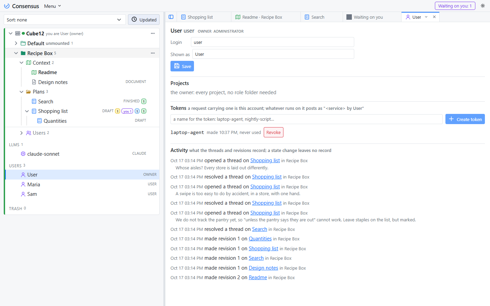
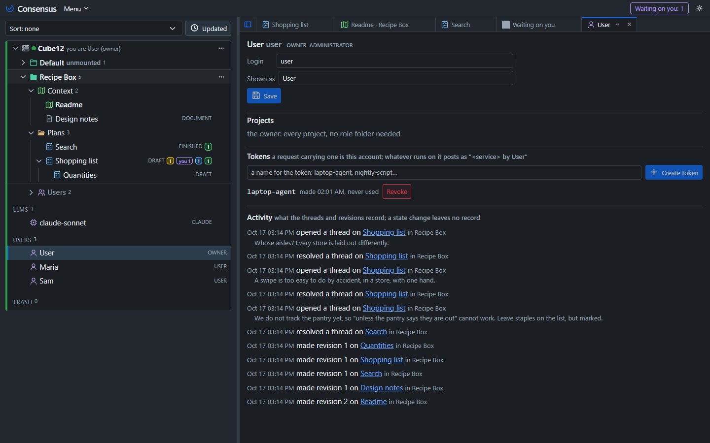
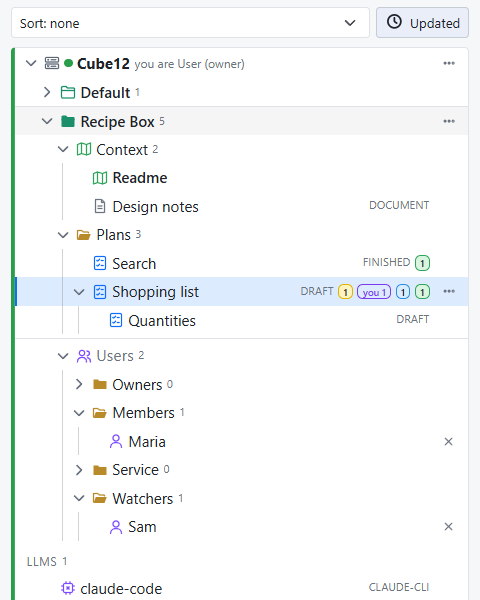
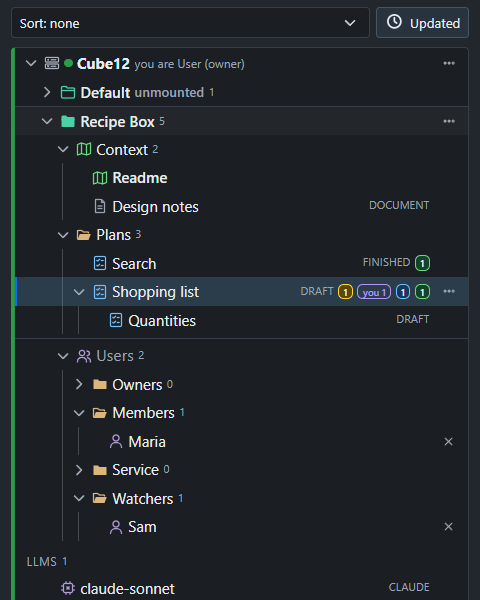

Consensus-AI
Consensus-AISharing a server
A project open in the desktop is yours alone: its sidecar takes every request as you, and nobody signs in. A server for several people is the Server: it signs people in through Consensus-AI and gives each of them a role in each project, whether it listens on this machine only or on the network, and a project reaches them once the Administrator has mounted it. This page is the order you meet it in: the sign-in, the Administrator and the Managers, mounting, the accounts, the roles, the tokens, and what each role sees. Settings and themes has the settings themselves.
Signing in
The Server tells people apart by their sign-in, whatever its Scope: a request with no session and no token is refused. Its page shows Consensus-AI's sign-in box, and a person who has signed in is who they are everywhere on the Server: in its own window, in a browser, and in a desktop window connected to it. Consensus keeps no password: Consensus-AI's sign-in identifies people by their email, and Consensus holds the roles.
The Scope says only where the Server listens. Local is this machine; Public is every interface, for a team on the network, and needs the Administrator's Professional license: in the Settings popup, sign in, and once the page holds a Professional license the Public choice is enabled; save, and the Server listens on the network from its next start.
The Administrator and the Managers
Every Server has one Administrator: the first person to sign in to it with a Personal or Professional license, or the one a Docker server names with the environment variable CONSENSUS_ADMIN. Until then the Server is closed: it serves the sign-in alone, and says why. The Server runs under the Administrator's license: Personal for this machine, Professional for the network. On the machine the Server runs on, the Administrator's account is the owner's record.
The Administrator may make any account a Manager, with the Manager switch on the account's page. The Administrator and the Managers manage the Server: its settings and the LLM tasks in them, the LLM connections, the accounts, the projects (new, imported, deleted, mounted), the trash, anyone's place in any project's roles, and any project's settings (Project settings… in its menu). Assigning Managers is the Administrator's alone, and so are the Administrator's and the Managers' own accounts. A Manager needs no license. Inside a project the Administrator and the Managers otherwise act by the role folder they are in, like anyone.
Mounting
The Server's registry lists its projects with a Mounted switch each. A project registered on the Server starts unmounted: read and written by the Administrator and the Managers alone, marked "unmounted" in its row, and not there for anyone else. Mount in the project's menu opens it to the accounts with a role in it; Unmount takes it back and leaves the roles as they are. Place the people first, then mount, and the project appears for them at once.
Accounts
The Server keeps a registry of its accounts, shown as the Users fold at the bottom of the Server's tree, which every signed-in person sees. An account is a user, a person, or a Service account, a system that is nobody's in particular: a bot, a scheduled job, a system the team shares. Everyone who is not the Administrator or a Manager is a Member of the Server.
A person's account is written the first time they sign in, from their sign-in: their email, their names, and the license their account carries. The Administrator or a Manager may make the record ahead of time with New user in the fold's menu (a login, a display name and the email), so the person can be placed in a project before they ever sign in; the record is completed by their first sign-in, matched by email. New Service account makes the other kind, with a name. A record is removed from the account's page, which takes it out of every role folder and revokes its tokens.


Clicking an account opens its page: its details (Administrator, Manager or Member), the projects it has a role in, its tokens, and its activity on the Server, newest first. A person sees their own page; the Administrator and the Managers see everyone's.
Roles
A role is what an account may see and do in one project. Every project has a fixed Users folder, last in the project with the people icon, holding exactly four folders: Owners, Members, Service and Watchers. An account is in one of them at most. The Administrator, a Manager, or an Owner of the project drags an account from the Server's Users fold into a folder to give it that role, between folders to change it, and presses the × beside it to take it out of the project.


| Role | May |
|---|---|
| Owner | everything in the project: read, write, comment and reply, resolve any thread, set the plan states, create, rename, move, archive and export, manage the Users folder, enable the Server's tasks for the project, press any task |
| Member | read and write: edit, create, comment and reply, resolve the threads they started, apply any resolved thread, press the tasks that write to Consensus or to files |
| Service | read and write the project through the API as a Member does, resolve nothing; press no task, so no run is ever started under it |
| Watcher | read the project and its threads; press the tasks that read only, Explain among them |
No role needs a license: the Server runs under its Administrator's, so anyone signed in, a free Registered account included, may hold any role (the licenses).
Which task a role may press is read from the task's Writes level, never from its name: a task that writes nothing is every role's, a task that writes to Consensus or to files is Owners' and Members', and a Service account presses none. A task you make next year is governed the same way the day you make it. The tasks always run on the Server.
Tokens
A token is the credential for anything that is not a signed-in page: an agent session beside your editor, a script, a service you run. Every account mints its own on its page: Create token with a name, the value shown once, then listed with its last use, and Revoke beside it. A request carrying the token (Authorization: Bearer <token>) is that account, in every project the account has a role in, and every record of what it did names the account, the token and the service that declared itself.
For your own agent session, the project's LLM Instructions (in its menu) make the token for you: opening them mints one for you and the project, named "LLM session: CONSENSUS_TOKEN=<token> node bin/mcp.js --server http://<server>:3500 --service <your name>.
The agent then acts as you, allowed what your role allows, and what it posts reads <agent> by <you>. A Service account's tokens are minted by the Administrator on its page, for the systems that are nobody's.
What each role sees
A mounted project is shown to those with a role in it, and to the Administrator and the Managers; an unmounted one to the Administrator and the Managers alone. The Server's Users fold is shown to every signed-in account; an account's page to that account, the Administrator and the Managers. A person with no role in any project sees the Users fold alone, until an Owner, a Manager or the Administrator places them. A request outside what a role allows is refused with the reason in plain words, in the page and over the API alike: "a Watcher reads only", "no role in this project".